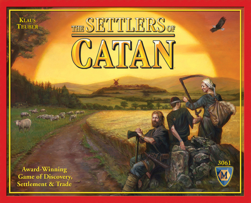
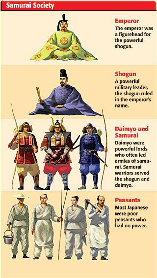
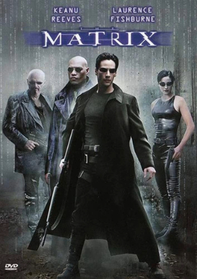

About Me
I am your friendly simple developer with an affinity for all things tech. The first time I touched a computer I was about six years old. Immediately a spell was cast over me. I had to be pulled away from the family desktop at odd hours constantly. I grew up on simple PC games such as pinball and marbles at first, then more complex games came. My first fully developed game I played was Starcraft by Blizzard Entertainment, from that moment on I knew I wanted a career in computer science. After much trial and error in trying to establish my place in the ocean of computer science, I found web development as my passion.
Achievements
- Graduation Speaker
- 3.8 GPA in current Bachelor degree program
- Exemplary service in past roles which earned me a raise early into employement
- Assembled over a dozen personal-use computers for myself, family, and friends.
- Cutting Edge: Archimonde
Hobbies & Interests
- Cooking
- Tabletop Games 
- Japanese Medieval Culture 
- Movies & Books 
- Computer Science